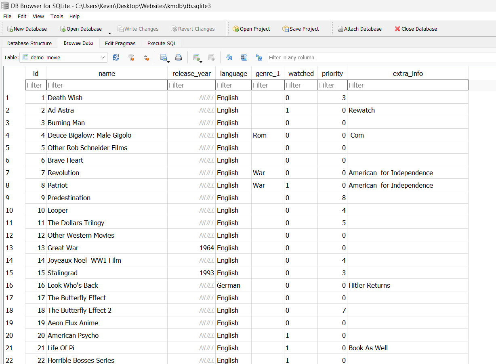

Projects
These are some independent projects I have worked on.
Transforming my watchlist.txt into a web app
Introduction
I have a secret. Every time someone tells me about a movie or show I put it into my watchlist. It's gotten really long. I would say unmanageable at this point. So I decided to clean it up using some skills I learned at university.
You can have a look at the file for yourself here.
As you can see the list has started to develop its own language
- ✓ means that I have seen the movie
- The length of these lines (!----!) indicate how eager I am to watch the movie.
- Additional information such as year of release or genre is stored in brackets.
Here's the process I followed.
Make A Copy
Before you do anything with data you care about, you should make a copy of it. It sounds simple enough but forgetting to do it can have serious consequences.
Divide Up The Problem
It would be very difficult to extract useful data from all parts of the watchlist at the same time. For example, the columns associated with movies(director, release date) and comics(author,num_issues) are different. Instead I am going to focus on the movies section first. The modified list is here.
Formatting into a CSV file with Python
The program I have created opens up the .txt file, reads each line sequentially, formats it and writes it to a new .csv file.
Figure 1: The .csv file generated by the program.
I had to make some alterations to the original .txt file by hand
- remove unclosed brackets
- joined separate language sections and added language in () instead
- split up lines containing multiple movies
Loading the CSV file into a Database
I am using MySQL as my database. To interact with MySQL I made use of the mysql.connector library recommended by its creators.
This allowed me to pass SQL commands to the database using Python.
The script I used to upload the values can be found here.
Set Up Django Front-End
I have now successfully created a database! However the average user cannot view my movie list (unless they know SQL) ☹️.
Adding and modifying movies through SQL queries is also a bit clunky. To fix this I created a web app using Django.
I loaded my csv file a django model which was translated into a sqlite database. (the MySQL database will be implement in later versions)
The script for this can be found in GitHub repository mentioned below.
Figure 2: The new sqlite database
Next I had to define some views that would access the Movie model, and some templates that would be displayed to the user. And I had a Django app ready! (on my laptop)
Deploying a Django App
I used pythonanywhere to host the web app. It's free and has a interface to deploy and manage your apps easily. You can visit the final site here.Future Improvements
Use Django templating language for web app.Pagination in all section with generic views- Make it so that others can create their own watchlist and ratings
- Make use of MySQL database instead of sqlite database.
- Store API key in enviroment variables (more secure)
- Continuous Deployment!
- Movie titles can contain commas which inteferes with a csv format.
- Improve extract functions in formatter.
- Increase range of genres.
- Movies can have multiple genres.
- Improve SEO?
- Store poster for each movie (scrape from web?).
- Scrape information about movies from web so more records are complete.
- Random recommendation not very helpful, make a recommendation base on inputs?
- Better search engine - use a plugin?
- Visualisations of count per genre, ratings over time, etc.